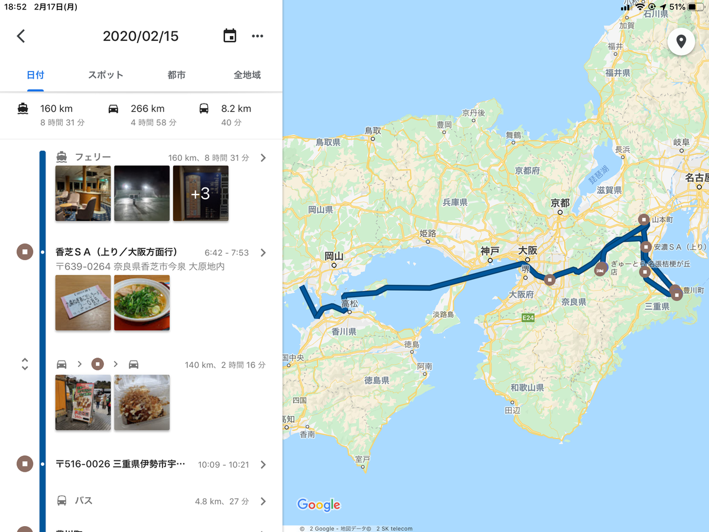
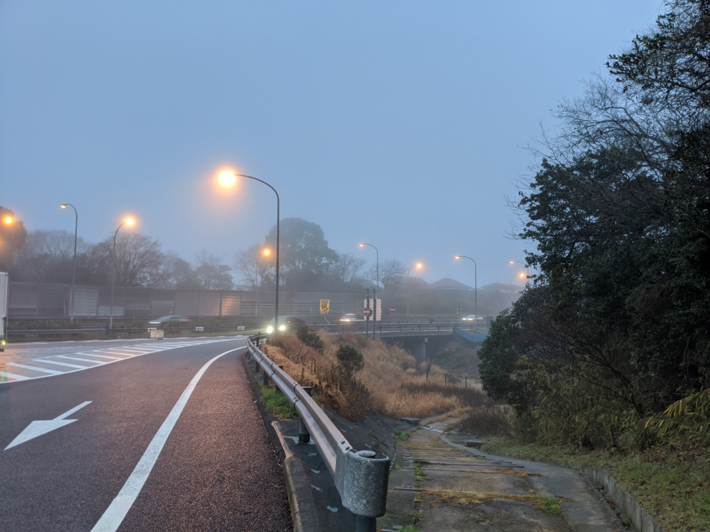

2月15日：伊勢神宮で赤福
公開日：

この日のミッションは、伊勢神宮で御神札をいただくこと、椿大社にお参りすること、だるやなぎ家代々の墓を掃除すること。
オレンジフェリーは定刻通り6時に到着し、すぐに下船が始まった。先頭に止まっていたプリウスのおっさんがなかなか現れず、他のクルマが出庫できないようで、誘導員の方は少し苛立っていたようだ。車両甲板に降りると「プリウスのお客様ですか！？ 後ろが詰まってるんです！ 急いでください！！」って言われたんだけど、うちの子はプリウスじゃないぞ（ぷんすか

南港を出て阪神高速に乗り、14号松原線を下ると、霧が次第に濃くなってきた。この調子では名阪国道の様子が心配。ただでさえ暴走トラックのすくつ（変換できない）になってるのに、霧も深いとなれば、マジでサンドイッチにされかねない。狂った生活リズムのせいで、船内であまり十分に睡眠がとれなかったこともあり、香芝 SA でちょっと長めの休憩を取りながら様子をみた。
あら、香りよくて美味しそうじゃない pic.twitter.com/7quBFfBDQd
— ガイウス・だるやなぎウス・あぶれオス🍊 (@daruyanagi) 2020年2月14日
この判断が功を奏したのか、別にそのまま行っても問題なかったのか。名阪国道も伊勢道も、心配したほどの悪コンディションではなかった。時折追い越し車線をふさぐ鈍足トラックに悪態をつきながら、アクセル全開で山を越える。名阪国道は道が悪いし、治安はもっと悪いけれど、個人的には走りなれた道ということもあり、結構好き。おとんがオープンの青いベンツを全損させたΩカーブやら、おかんが覆面パトカーに捕まった IC やら、思い出深いところでいっぱいだ。
— ガイウス・だるやなぎウス・あぶれオス🍊 (@daruyanagi) 2020年2月15日
途中、日本一食べづらいというたこ焼きを食べた。どっちかっていうとお好み焼きかな？ってサイズなのだけど、味はちゃんとたこ焼きだった。卵が丸々1個入ってるけど、これをどう思うかが評価の分かれ目だと思う。個人的には要らない気もする。
もはやお好み焼きやけど、ちゃんとたこ焼きの味がする pic.twitter.com/KwN8dhzReF
— ガイウス・だるやなぎウス・あぶれオス🍊 (@daruyanagi) 2020年2月15日
なんやかんやで、伊勢神宮に到着したのは10時頃だったか。ナビ代わりにしている iPad mini の「Google マップ」に適当にセットしたせいで、内宮の方の市営駐車場に案内された。伊勢神宮には外宮と内宮があるけれど、参拝は外宮からやるのがいいらしい。クルマはそこで乗り捨てて、三重交通のバスに乗り、外宮へ向かった。最近の三重交通は SUICA が使えるのな。バスそのものは大して変わった気がしないけれど、ちょっとずつ改良されてるんだなと妙味感心した。
三交バスで外宮～内宮と周り、御朱印と御神札をいただき、この地でのミッションは完了。伊勢神宮に参拝するのは初めてではないので、とくに何か記すことはない。海外観光客がわりとおおくて、最近話題の新型コロナウイルスのことが少し気にかかったけど、まぁ、かかっちまったらそれまでのこと。新型コロナウイルスと伊勢神宮の清浄な空気なら、後者が勝ってくれると信じる。
これを食べねばきた意味がない (@ 赤福 内宮前支店 in 伊勢市, 三重県) https://t.co/UfEHItAz79 pic.twitter.com/s7hRRgwZIF
— ガイウス・だるやなぎウス・あぶれオス🍊 (@daruyanagi) 2020年2月15日
あまりお腹はすいていなかったので、赤福とお茶だけして帰った。
午後4時、名張着。桔梗が丘駅前のぎゅ～とら（昔は近鉄百貨店だった）で仏花とお酒を買い、寺でお墓を洗い、適当にお供えをし、定宿の名張シティホテルに戻った。本当は名張の駅前で少し飲みたかったのだけど、前日あまり眠れなかったこともあり、ベッドに倒れこむや睡魔に襲われ、そのまま6、7時間、たっぷりと寝てしまった。